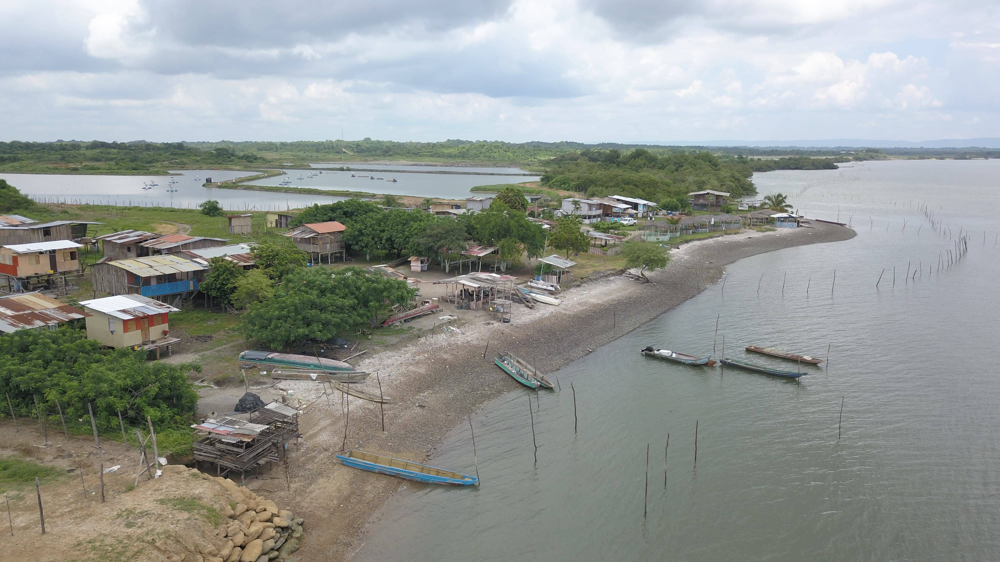

Noticias sobre viajes y turismo en Perú
Descubierta la Nueva Joya de Perú: Playa Punta Diamante Rivaliza con Punta Cana

En un emocionante giro de eventos, la costa norte de Perú ha revelado un tesoro escondido: la Playa Punta Diamante.
Esta playa, con su arena blanca inmaculada y aguas cristalinas, está rápidamente convirtiéndose en el nuevo punto
de referencia para los amantes de la playa, comparándose favorablemente con la famosa Punta Cana.
Además de ser un paraíso para actividades como el snorkel y los paseos en bote, la playa está impulsando la economía local al atraer a turistas de todas partes del mundo. Con su fácil accesibilidad y una amplia gama de opciones de alojamiento, Punta Diamante promete ser el próximo destino de moda en la lista de todos los viajeros.
(Publicado el 02 de marzo de 2024)
Además de ser un paraíso para actividades como el snorkel y los paseos en bote, la playa está impulsando la economía local al atraer a turistas de todas partes del mundo. Con su fácil accesibilidad y una amplia gama de opciones de alojamiento, Punta Diamante promete ser el próximo destino de moda en la lista de todos los viajeros.